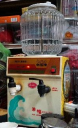

老 雜 像 極 了
✧郵局 郵務 區
在沒有網路的時 代，郵件為人們 傳遞訊息的重要 媒介。然受限於 交通條件，郵局 設點難以遍布各 地，因此設立郵 政代辦處及郵票 代售處代辦郵 務，委託處以來 往人群多的雜貨 店及性質相近的 文具店為主。這 使得郵筒、「郵票 代售處」鐵牌成 為早期許多雜貨 店門口的標準配 備。 店亦可見其蹤跡。
------------------------------------------------------------
✧車站 售票 處
除了郵票，部分 雜貨店由於地緣 關係，亦會代售 車票，方便乘客 購票。中西區的 順富商行因鄰近 臺南火車站，即 曾售有火車票。 南區喜樹圖書館 旁設有臺南客運 站牌，客運公司 便委託站牌對面 的進森發號提供 代售客運車票的 服務。
※臺南客運車票代售處 鐵牌｜進森發號提供
------------------------------------------------------------
✧咖啡 外帶 區
提起便利商店的 多功能服務，現 泡咖啡絕對是多 數人常使用的選 項。事實上，部 分雜貨店亦曾提 供現泡咖啡的服 務，一臺熱水器 加上咖啡包，簡 單的即溶咖啡便 是等車的良伴。
------------------------------------------------------------
✧里民 服務 處
因買賣商品，雜 貨店多與周邊居 民互動密切，時 常成為鄉里的信 息交流站，也容 易讓經營者成為 熟知地方的中心 人物，不少雜貨 店老闆因此出任 里長，並將里民 服務處設於店 內，使得雜貨店 常成為鄰里聚會 談天的首選之
※2018年鄭林阿雪女士當選里長，獲時任北區區長的李皇興先生贈送「輔政利民匾額」 慶賀，今掛於豐誠號 店內